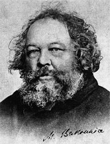
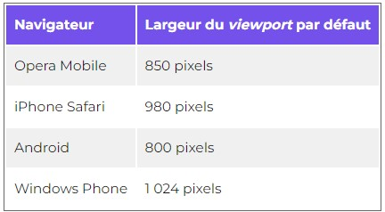

Bonjour monsieur l'auteur
Nous écrivons ici un article qui est une information qui va être enrichie par l'"aside" écrit plus haut dans le code
Ceci est un paragraphe !
Ceci est un autre paragraphe !
Cependant, j'ai utilisé la balise br / pour sauter une ligne
Wallah, bientot je vais conquérir le monde !!!
Avec un business bien juteux, en attendant j'apprends :)
Pour mettre en évidence l'intérêt des puces, nous allons créer une liste à puce et un ensemble de puce. L'ensemble de ces puces seront mis en avant dans un ordre croissant :
Ceci fait partie des listes de bases, j'ai adopté une bonne attitude en codant en même temps que lui, il ne faut pas arrêter de pratiquer !!!
Attention cependant, il ne faut pas oublier le (br /) pour sauter une ligne dans le paragraphe comme précisé ci-dessus
Fini de tergiverser, je vais maintenant vous expliquer pourquoi ma copine : Greta est la plus forte et la meilleure des copines. Les explications n'ayant pas un ordre précis, je ne vais pas numéroter les points abordés, prends les dans l'ordre dans lequel tu as envie :
Attention ! Il ne faut pas confondre ma Greta avec une Greta bien plus connue mais un peu plus spéciale :
Greta Thunberg... Ici vous avez un lien qui mène sur sa page wikipédia Greta Thunberg !
N'ayez pas peur, en vrai je suis sûr qu'elle est gentille elle aussi.
Attention !!! n'allez surtout pas sur le lien qui suit, il mène sur une page inutile seulement pour prouver que j'arrive à créer un hyperlien en html sur mon dossier que je viens de créer
Je suis très heureux de vous annoncer que ce lien est un lien de malade,
jetez-y un coup d'oeil, promis ça vaut le détour !!!
La motivation est entrain de venir, n'abandonne jamais et continue à pratiquer coco, c'est important !
Aller directement à la phrase commençant par :
Alexis de Tocqueville
Bakounine
Kant
Quand je considère cette nation en elle-même, je la trouve plus extraordinaire qu’aucun des événements de son histoire.
En a-t-il jamais paru sur la terre une seule qui fût si remplie de contrastes et si extrêmes dans chacun de ses actes, plus conduite par des sensations, moins par des principes ;
faisant ainsi toujours plus mal ou mieux qu’on ne s’y attendait, tantôt au-dessous du niveau commun de l’humanité, tantôt fort au-dessus ;
un peuple tellement inaltérable dans ses principaux instincts, qu’on le reconnaît encore dans des portraits qui ont été faits de lui y il a deux ou trois mille ans, et, en même temps, tellement mobile dans ses pensées journalières et dans ses goûts, qu’il finit par se devenir un spectacle inattendu à lui-même, et demeure souvent aussi surpris que les étrangers à la vue de ce qu’il vient de faire ;
le plus casanier et le plus routinier de tous quand on l’abandonne à lui-même, et, lorsqu’une fois on l’a arraché malgré lui à son logis et à ses habitudes, prêt à pousser jusqu’au bout du monde et à tout oser ;
indocile par tempérament, et s’accommodant mieux toutefois de l’empire arbitraire et même violent d’un prince que du gouvernement régulier et libre des principaux citoyens ;
aujourd’hui l’ennemi déclaré de toute obéissance, demain mettant à servir une sorte de passion que les nations les mieux douées pour la servitude ne peuvent atteindre ;
conduit par un fil tant que personne ne résiste, ingouvernable dès que l’exemple de la résistance est donné quelque part ;
trompant toujours ainsi ses maîtres, qui le craignent ou trop ou trop peu ;
jamais si libre qu’il faille désespérer de l’asservir, ni si asservi qu’il ne puisse encore briser le joug ; apte à tout, mais n’excellant que dans la guerre ;
adorateur du hasard, de la force, du succès, de l’éclat et du bruit, plus que de la vraie gloire ;
plus capable d’héroïsme que de vertu, de génie que de bon sens, propre à concevoir d’immenses desseins plutôt qu’à parachever de grandes entreprises ;
la plus brillante et la plus dangereuse des nations de l’Europe, et la mieux faite pour y devenir tour à tour un objet d’admiration, de haine, de pitié, de terreur, mais jamais d’indifférence ?
Trois éléments ou, si vous voulez, trois principes fondamentaux constituent les conditions essentielles de tout développement humain, tant collectif qu’individuel dans l’histoire : 1° l’animalité humaine ; 2° la pensée ; et 3° la révolte. À la première correspond proprement l’économie sociale et privée ; à la seconde ; la science ; à la troisième, la liberté.
Les idéalistes de toutes les Écoles, aristocrates et bourgeois, théologiens et métaphysiciens, politiciens et moralistes, religieux, philosophes ou poètes - sans oublier les économistes libéraux, adorateurs effrénés de l’idéal, comme on sait -, s’offensent beaucoup lorsqu’on leur dit que l’homme, avec son intelligence magnifique, ses idées sublimes et ses aspirations infinies, n’est, aussi bien que toutes les autres choses qui existent dans le monde, rien que matière, rien qu’un produit de cette vile matière.
Nous pourrions leur répondre que la matière dont parlent les matérialistes, matière spontanément. éternellement mobile, active, productive, matière chimiquement ou organiquement déterminée, et manifestée par les propriétés ou les forces mécaniques, physiques, animales et intelligentes qui lui sont foncièrement inhérentes, que cette matière n’a rien de commun avec la vile matière des idéalistes. Cette dernière, produit de leur fausse abstraction, est effectivement un être stupide, inanimé, immobile, incapable de produire la moindre des choses, un caput mortuum, une vilaine imagination opposée à cette belle imagination qu’ils appellent Dieu, l’Être suprême vis-à-vis duquel la matière, leur matière à eux, dépouillée par eux-mêmes de tout ce qui en constitue la nature réelle, représente nécessairement le suprême Néant. Ils ont enlevé à la matière l’intelligence, la vie, toutes les qualités déterminantes, les rapports actifs ou les forces, le mouvement même, sans lequel la matière ne serait pas même pesante, ne lui laissant rien que l’impénétrabilité et l’immobilité absolue dans l’espace ; ils ont attribué toutes ces forces, propriétés et manifestations naturelles, à l’Être imaginaire créé par leur fantaisie abstractive ; puis, intervertissant les rôles, ils ont appelé ce produit de leur imagination, ce fantôme, ce Dieu qui est le Néant : "l’Être suprême" ; et, par une conséquence nécessaire, ils ont déclaré que l’Être réel, la matière, le monde, était le Néant. Après quoi ils viennent nous déclarer gravement que cette matière est incapable de rien produire, ni même de se mettre en mouvement par elle-même, et que par conséquent elle a dû être créée par leur Dieu.
Qui a raison, les idéalistes ou les matérialistes ? Une fois que la question se pose ainsi, l’hésitation devient impossible. Sans doute, les idéalistes ont tort, et seuls les matérialistes ont raison. Oui, les faits priment les idées, oui, l’idéal, comme l’a dit Proudhon, n’est qu’une fleur dont les conditions matérielles d’existence constituent la racine. Oui, toute l’histoire intellectuelle et morale, politique et sociale de l’humanité est un reflet de son histoire économique.
La question fondamentale de la Critique de la Raison pure est : « Comment des jugements synthétiques a priori sont-ils possibles ? »
Qu’il existe de tels jugements, c’est ce dont Kant ne doute pas un instant, car ce sont de tels jugements qui constituent, selon lui, la métaphysique et la mathématique pure.
Expliquer comment ces jugements sont légitimes en mathématique et illégitimes en métaphysique, tel paraît être le but de la Critique de la Raison pure ;
tel est en tout cas l’objet de la Méthodologie transcendentale. « La mathématique fournit l’exemple le plus éclatant d’une raison pure qui réussit à s’étendre d’elle-même sans le secours de
l’expérience » (B. 740 ; cf. p. 8 et 752)[2] ; et cet exemple a été séducteur pour la métaphysique[3].
Celle-ci peut-elle légitimement aspirer à la certitude apodictique en employant la même méthode que la mathématique ? Telle est la question (B. 872).
Or « la métaphysique est la connaissance rationnelle par concepts ; la mathématique est la connaissance rationnelle par construction de concepts » (B. 865, 741).
Qu’est-ce que construire un concept ? C’est « exposer l’intuition a priori qui lui correspond ». La construction des concepts n’est donc possible que si nous possédons des intuitions a priori.
Celles-ci nous sont fournies par les deux formes a priori de la sensibilité, l’espace et le temps.
C’est donc l’Esthétique transcendentale qui est chargée de répondre à cette question : « Comment les mathématiques pures sont-elles possibles ? » (B. 55, 73.)
Par là se trouvent déterminés à la fois l’objet des mathématiques et la portée de leur méthode.
Leur objet ne peut être que la grandeur, « car seul le concept de grandeur se laisse construire » (B. 742) ;
et l’espace et le temps sont les seules « grandeurs originaires » (B. 753). Leur méthode ne peut s’appliquer qu’à ce qui peut être objet d’intuition, et d’intuition a priori :
elle ne peut donc s’appliquer ni aux concepts purs et simples, ni aux intuitions empiriques, par exemple aux qualités sensibles (B. 743).
La mathématique ne peut avoir pour objets que les concepts qu’on peut construire, à savoir la figure, détermination d’une intuition a priori dans l’espace, la durée, division du temps,
et le nombre, résultat général de la synthèse d’un seul et même objet dans l’espace et dans le temps, qui par suite mesure la grandeur d’une intuition (B. 752).
Ainsi c’est la méthode, et non l’objet, qui distingue essentiellement la mathématique de la métaphysique, et c’est la méthode de la mathématique qui détermine son objet[4].
Par là s’explique que les jugements mathématiques puissent être à la fois synthétiques (comme les jugements empiriques) et a priori (comme les jugements analytiques).
Ils sont synthétiques, parce qu’ils reposent sur une synthèse effectuée dans l’intuition ; et ils sont a priori, parce que cette intuition est elle-même a priori.
On va dès à présent ancrer les parties sur la page 3 où j'ai préalablement copier/coller les textes précédents afin de nous rendre directement sous le nom des auteurs dont on a fait appel.
Alexis de Toqueville sur la page 3
Afin de tenter de valider tout seul un ancrage sur un lien wikipedia, je vous amène directemrent sur la page anglaise de Greta Thunberg afin de voir son Travail
Maintenant laisse la souris sans appuyer sur l'hyperlien !
Maintenant ça ne rigole plus, en plus d'afficher une bulle, quand nous allons cliquer sur l'hyperlien, la page va s'ouvrir dans un nouvelle onglet !
Malgrès la clareté du site, si vous voulez approfondir les notions que nous avons abordées, n'hésitez pas à m'envoyer un e_mail !
Ici, un lien menant à la fiche du programme pour la formation de développeur WEB : Téléchargez la brochure
Photo des vacances en Inde :

Attention, il est très important d'importer une image qui a une taille affichable dans une page web.
Ici, j'ai dû réduire l'image originale (accessible dans mon dossier image d'où vient le modèle présent ci-dessus)
d'un facteur 10%.
ci-joint, une photo miniature, cliquable pour ouvrir l'original dans un onglet à part.
On peut cliquer sur l'image suivante :

Connaissez-vous le logiciel Bloc-Notes ? On peut faire des sites web avec !

Figure ou image simple ? Comment et quand les placer ?
Il faut se rendre compte que HTML5 offre des positions avantagées pour las figures (qui ont un positionnement
à part dans une ligne de code, balise figure) contrairement à l'illustration
de paragraphe qui sera une image dans un paragraphe.
La balise figure a un rôle avant tout sémantique. Cela veut dire qu'elle indique à l'ordinateur que l'image a du sens et qu'elle est importante pour la bonne compréhension du texte. Cela peut permettre à un programme de récupérer toutes les figures du texte et de les référencer dans une table des figures.
Une balise figure peut comporter plusieurs images
Exemple :

Nous allons dès à présent travailler un peu sur les styles dans les paragraphes qui vont suivre.
A commencer par le titre de cette section qui a été généré par id. Dans le fichier : style.css, nous avons écrit la ligne suivante :
#particulier
{
color: yellowgreen;
}
Ceci signifie que l'id créer et qui a servit à écrire ce titre ne peut être utilisé qu'une seule fois dans cette page HTML5.
Dorénavant, nous allons travailler avec les span et les div
Ce paragraphe est changé de style à l'aide de la commande "h4 + p" dans le fichier style. Il signifie : le paragraphe qui suit un titre "h4" sera de couleur XXX
Ci-après, nous allons cibler des balises "em" dans des titres h1 et des paragraphes
On va tester le tout avec une balise em : On est des coquins. Attention, on a changé la couleur de tout les mots en italique précédemment
Maintenant pour une balise strong : Caca
Mise en forme de la balise CSS :
balise1
{
propriete1: valeur1;
propriete2: valeur2;
}
Mise en forme des paragraphes.
Si on veut utiliser une unité de grandeur qui va s'adapter aux différentes tailles d'écran, nous pouvons écrire en taille relatif dans notre
ligne de code CSS comme suit :
p
{
font-size: 1.xem;
}
Ici, changer la valeur de x va changer la valeur de la taille relatif de la police. A la place de 1.x em, nous pouvons mettre une valeur aléatoire de px.
Exemple : 14px; ou 22px; Celà va mettre une valeur de taille de police adapté.
Pour ce qui est du type de police, nous tapons ce qui suit :
p
{
font-family: Impact, "Arial Black", Arial, Verdana;
}
"Font-family" signifie que le navigateur va utiliser dans l'ordre, dans la mesure du possible, Impact puis Arial Black, puis, en cas de non présence de ces 2 éléments,
Arial et enfin Verdana. Il y'a donc un ordre préférentiel.
La majorité des Navigateurs peuvent lire les polices suivantes :
Il est intéressant de regarder le code ci-dessus pour se rendre compte que l'on peut donner un identifiant à une puce ou juste lui fournir un texte en police spécial. Il est aussi important de noter que l'identifiant d'un ID ne doit pas commencer par un nombre car si il commence par un nombre (ggg au lieu de 3g), l'identifiant n'est pas pris en compte (Et à fortiori avec les classes ?)
Il est aussi possible de rajouter une nouvelle police mais pour cela, il faut la faire télécharger par notre utilisateur sur le site Font Squirrel
Bien regarder, => download.
Se renseigner sur le lien suivant
Il est important de se rendre compte qu'à l'aide de cette manipulation, la police actuellement utilisé est le
'ambleregular' comme précisé ligne 67 du fichier style.css.
Comme d'après les paragraphes précédent, on uilise ambleregular puis Impact, puis...
Maintenant, pour écrire en italique :
La balise EM est faites pour dire que le texte est important. Pas pour mettre un texte en italique.
Pour mettre un texte en italique, nous devons utiliser CSS indiquer au navigateur que le texte est en italique.
Dans le cas que nous observons, il faut vraiment se méfier étant donné que la class se dénomme "Italique" et non "italique"
C'est important de faire le distinguo.
De la même manière que précédemment, en attribuant une classe "gras" dans le fichier css, nous créons un paragraphe en gras.
Et là, nous avons créer une classe hybride donc gras et italique.
Je profite de cette classe particulière pour bien préciser qu'il est important de bien nommer les classes.
Là on met une ligne au dessus
Dorénavant, nous allons aligner les textes et les Titres
Paragraphe justifié, qui prend toute la largeur.
Exemple avec Toqueville :
Quand je considère cette nation en elle-même, je la trouve plus extraordinaire qu’aucun des événements de son histoire. En a-t-il jamais paru sur la terre une seule qui fût si remplie de contrastes et si extrêmes dans chacun de ses actes, plus conduite par des sensations, moins par des principes ; faisant ainsi toujours plus mal ou mieux qu’on ne s’y attendait, tantôt au-dessous du niveau commun de l’humanité, tantôt fort au-dessus ; un peuple tellement inaltérable dans ses principaux instincts, qu’on le reconnaît encore dans des portraits qui ont été faits de lui y il a deux ou trois mille ans, et, en même temps, tellement mobile dans ses pensées journalières et dans ses goûts, qu’il finit par se devenir un spectacle inattendu à lui-même, et demeure souvent aussi surpris que les étrangers à la vue de ce qu’il vient de faire ; le plus casanier et le plus routinier de tous quand on l’abandonne à lui-même, et, lorsqu’une fois on l’a arraché malgré lui à son logis et à ses habitudes, prêt à pousser jusqu’au bout du monde et à tout oser ; indocile par tempérament, et s’accommodant mieux toutefois de l’empire arbitraire et même violent d’un prince que du gouvernement régulier et libre des principaux citoyens ; aujourd’hui l’ennemi déclaré de toute obéissance, demain mettant à servir une sorte de passion que les nations les mieux douées pour la servitude ne peuvent atteindre ; conduit par un fil tant que personne ne résiste, ingouvernable dès que l’exemple de la résistance est donné quelque part ; trompant toujours ainsi ses maîtres, qui le craignent ou trop ou trop peu ;
jamais si libre qu’il faille désespérer de l’asservir, ni si asservi qu’il ne puisse encore briser le joug ; apte à tout, mais n’excellant que dans la guerre ; adorateur du hasard, de la force, du succès, de l’éclat et du bruit, plus que de la vraie gloire ; plus capable d’héroïsme que de vertu, de génie que de bon sens, propre à concevoir d’immenses desseins plutôt qu’à parachever de grandes entreprises ; la plus brillante et la plus dangereuse des nations de l’Europe, et la mieux faite pour y devenir tour à tour un objet d’admiration, de haine, de pitié, de terreur, mais jamais d’indifférence ?
Maintenant, Exemple avec Bakounine par la droite :

Trois éléments ou, si vous voulez, trois principes fondamentaux constituent les conditions essentielles de tout développement humain, tant collectif qu’individuel dans l’histoire : 1° l’animalité humaine ; 2° la pensée ; et 3° la révolte. À la première correspond proprement l’économie sociale et privée ; à la seconde ; la science ; à la troisième, la liberté.
Les idéalistes de toutes les Écoles, aristocrates et bourgeois, théologiens et métaphysiciens, politiciens et moralistes, religieux, philosophes ou poètes - sans oublier les économistes libéraux, adorateurs effrénés de l’idéal, comme on sait -, s’offensent beaucoup lorsqu’on leur dit que l’homme, avec son intelligence magnifique, ses idées sublimes et ses aspirations infinies, n’est, aussi bien que toutes les autres choses qui existent dans le monde, rien que matière, rien qu’un produit de cette vile matière.
Nous pourrions leur répondre que la matière dont parlent les matérialistes, matière spontanément. éternellement mobile, active, productive, matière chimiquement ou organiquement déterminée, et manifestée par les propriétés ou les forces mécaniques, physiques, animales et intelligentes qui lui sont foncièrement inhérentes, que cette matière n’a rien de commun avec la vile matière des idéalistes. Cette dernière, produit de leur fausse abstraction, est effectivement un être stupide, inanimé, immobile, incapable de produire la moindre des choses, un caput mortuum, une vilaine imagination opposée à cette belle imagination qu’ils appellent Dieu, l’Être suprême vis-à-vis duquel la matière, leur matière à eux, dépouillée par eux-mêmes de tout ce qui en constitue la nature réelle, représente nécessairement le suprême Néant. Ils ont enlevé à la matière l’intelligence, la vie, toutes les qualités déterminantes, les rapports actifs ou les forces, le mouvement même, sans lequel la matière ne serait pas même pesante, ne lui laissant rien que l’impénétrabilité et l’immobilité absolue dans l’espace ; ils ont attribué toutes ces forces, propriétés et manifestations naturelles, à l’Être imaginaire créé par leur fantaisie abstractive ; puis, intervertissant les rôles, ils ont appelé ce produit de leur imagination, ce fantôme, ce Dieu qui est le Néant : "l’Être suprême" ; et, par une conséquence nécessaire, ils ont déclaré que l’Être réel, la matière, le monde, était le Néant. Après quoi ils viennent nous déclarer gravement que cette matière est incapable de rien produire, ni même de se mettre en mouvement par elle-même, et que par conséquent elle a dû être créée par leur Dieu.
Qui a raison, les idéalistes ou les matérialistes ? Une fois que la question se pose ainsi, l’hésitation devient impossible. Sans doute, les idéalistes ont tort, et seuls les matérialistes ont raison. Oui, les faits priment les idées, oui, l’idéal, comme l’a dit Proudhon, n’est qu’une fleur dont les conditions matérielles d’existence constituent la racine. Oui, toute l’histoire intellectuelle et morale, politique et sociale de l’humanité est un reflet de son histoire économique.
Si on veut clear les images à droite ou à gauche du flottant, de manière indifférenciée, il faut marquer dans la commande CSS :
.autreparagraphe
{
clear: both;
}
Afin de mettre en avant un texte qui est justifié, nous allons justifier le texte sur Kant :
Kant caractérise la méthode mathématique en l’opposant à la méthode de la philosophie. La mathématique seule a des axiomes, c’est-à-dire des principes synthétiques a priori,
« parce qu’elle seule peut, en construisant un concept, lier a priori et immédiatement ses prédicats dans l’intuition de son objet » (B. 760)[5]. La philosophie ne peut pas avoir d’axiomes,
car elle ne peut pas sortir du concept pour le lier à un autre concept. La mathématique seule a des définitions, car seule elle crée ses concepts par une synthèse arbitraire ; par suite, ses
définitions sont indiscutables et ne peuvent être erronées. Au contraire, on ne peut pas à proprement parler définir, soit les objets empiriques, soit les concepts a priori, on ne peut que les
décrire, et cette description est toujours discutable, car on ne sait jamais si l’on a épuisé la compréhension d’un concept préalablement donné[6]. Enfin la mathématique seule a des
démonstrations proprement dites, car « on ne peut appeler démonstration qu’une preuve apodictique, en tant qu’elle est intuitive » (B. 762). La philosophie ne peut pas effectuer des
démonstrations sur ses concepts, car il lui manque « la certitude intuitive ». La conclusion de cet examen est la séparation complète, l’opposition absolue de la mathématique, non seulement par
rapport à la métaphysique, mais par rapport à la philosophie tout entière, et notamment à la logique. Car la logique repose sur des principes analytiques, qui paraissent se réduire au principela mathématique peut légitimement énoncer des jugements synthétiques a priori,
de contradiction ; et elle ne permet d’établir que des jugements analytiques. Si c’est parce qu’« elle ne
s’occupe d’objets et de connaissances que dans la mesure où ceux-ci se laissent représenter dans l’intuition » (B. 8). Il est manifeste, d’ailleurs, que si Kant insiste tellement sur la
différence des méthodes de la mathématique et de la métaphysique, c’est par réaction contre le rationalisme de Wolff, qui prétendait, comme Leibniz, appliquer à la philosophie la méthode
mathématique, comme étant la seule méthode logique et apodictique.
Pour justifier ou centrer ou mettre à droite, nous allons utiliser dans notre code CSS les commandes "left", "center", "right", "justify" avec les mêmes styles que ceux utilisés précédemments.
On peut choisir d'écrire avec les couleurs près établies comme la
ligne précedente ou bien de choisir un code couleur RGB comme ici. Pour choisir
une couleur facilement, on peut utiliser ce site.
Il est aussi à noter sur notre CSS que RGB est souligné à l'aide de l'outil mark.
Ici, nous montrons comment écrire une commande pour faire un fond mono-couleur
body
{
background-color: lightyellow;
}
Pour rendre cela intéressant, nous allons supprimer cette ligne du fichier CSS.
Dorénavent, nous avons un site internet avec pour "background" notre image "neige".
Notre neige peut être tirée dans tout les sens avec les lignes suivantes :
body
{
background-image: url("dossierimages/notreimage.jpg");--------Image qui se repete à l'infini
backround-attachment: fixed;--------Aide à fixer l'image. Image immobile, qui ne suit pas le texte quand il défile.
background-repeat: no-repeat;--------L'image n'apparaît qu'une fois sur l'arrière plan
background-position: top-right;--------L'image n'est positionnée qu'une fois, en haut à droite au lieu d'en haut à gauche usuellement.
}
On peut aussi écrire tout d'un seul coup avec la ligne :
body
{
background: url("neige.jpg") fixed no-repeat ;
}
Ce paragraphe sert à mettre en évidence le style d'opacité
afin de mettre en transparence ou en évidence un texte qui va être surligné.
Nous pouvons observer sur ce paragraphe un surlignement en noir. Cependant, quand nous changeons la valeur, l'opacité change de même. Celà ressemble à ceci dans notre CSS :
.essaiesurtrans
{
background-color: black;
color: white;
opacity: 0.3;
}
Ce paragraphe sert quand à lui à créer une transparence liée à une couleur : ici la couleur rouge.
le code s'écrit comme suit sur CSS :
.transpCLR
{
background-color: rgba(255, 0, 0, 0.5);
}
Ici, le fond rouge est à moitié transparent.
En résumé :
cAfin de voir différentes bordures, nous avons besoin de prendre des textes
et de les comparer avec les différents styles que nous allons utiliser pour la
classe de nos paragraphes. Je tente de broder afin de faire un paragraphe assez long
et par la même je m'exerce à la dactilographie en ne regardant pas mon clavier.
C'est rigolo. Enfait c'est pas si compliqué d'écrire sans regarder le clavier. Ca
demande très certainement un peu de pratique mais je sens que ça se dérouille.
Le texte que je suis entrain d'écrire ne sert alors peut-être pas à rien.
En tout cas d'un point de vue entrainement. Car d'un point de vue lecture, c'est très loin d'être intéressant.
Afin de voir différentes bordures, nous avons besoin de prendre des textes
et de les comparer avec les différents styles que nous allons utiliser pour la
classe de nos paragraphes. Je tente de broder afin de faire un paragraphe assez long
et par la même je m'exerce à la dactilographie en ne regardant pas mon clavier.
C'est rigolo. Enfait c'est pas si compliqué d'écrire sans regarder le clavier. Ca
demande très certainement un peu de pratique mais je sens que ça se dérouille.
Le texte que je suis entrain d'écrire ne sert alors peut-être pas à rien.
En tout cas d'un point de vue entrainement. Car d'un point de vue lecture, c'est très loin d'être intéressant.
Afin de voir différentes bordures, nous avons besoin de prendre des textes
et de les comparer avec les différents styles que nous allons utiliser pour la
classe de nos paragraphes. Je tente de broder afin de faire un paragraphe assez long
et par la même je m'exerce à la dactilographie en ne regardant pas mon clavier.
C'est rigolo. Enfait c'est pas si compliqué d'écrire sans regarder le clavier. Ca
demande très certainement un peu de pratique mais je sens que ça se dérouille.
Le texte que je suis entrain d'écrire ne sert alors peut-être pas à rien.
En tout cas d'un point de vue entrainement. Car d'un point de vue lecture, c'est très loin d'être intéressant.
Il existe d'autres bordures accessibles via ce lien

En résumé :
a:hover
{
background-color: gold;
}
Ici, cette commande surligne en "or" les liens que j'ai au préalablement importé.
La commande hover est importante (hover = survoler), c'est elle qui m'a permis
de créer l'effet de ce paragraphe quand on passe la souris dessus.
Enfin, la commande suivante permet, quand on clique sur un lien, de mettre en
surbrillance le lien :
a:active
{
color: lightyellow;
}
En résumé :
Nous écrivons ici un article qui est une information qui va être enrichie par l'"aside" écrit plus haut dans le code
En résumé :

Il y'a plusieurs balises de style important à prendre en compte nottament :
width: ;
min-width: ;
max-width: ;
height: ;
min-height: ;
max-height: ;
En teme de blocks et Inlines, nous avons deux balises qui nous renseignent sur
Les objets que nous manipulons à savoir < span > < / span >
(Inline) et < div > < / div > (Block)
Leurs importance est à prendre en compte car ils vont délimiter les tailles de
blocks. Sachant que ces tailles de block vont être délimités en % de taille
d'écran, en taille de pixel,.. Ils vont aussi être délimités de bases, en valeurs
maximales et minimales.
Il ne faut pas hésiter à jouer avec les différentes options que nous offre le style
qui a aidé à écrire ce paragraphe (.blockparagraphe) afin de pouvoir se rendre
compte des différents paramètres qui influent sur la taille des blocks ainsi que sur
les contraintes que l'on peut appliquer sur eux. Afin de pouvoir se rendre compte des bordures et de comment elles se comportent. J'ai mis un cadre autour du texte afin
de montrer les limites de ce block.
Dans ce block, nous allons aussi introduire des marges intérieurs et extérieurs comme explicité sur le schémas ci-dessous qui (soit dit en passant) est mis à la fin du
block

Marges
Ce petit paragraphe ne sert qu'à illustrer les marges et padding personnalisés
comme précisé dans le css que j'ai crée à l'occasion de ce paragraphe.
La notation pour margin est :
margin: 5px 10px 20px 0;--------- En allant dans l'ordre (haut, droite, bas, gauche). Même délire pour le padding.
margin: auto;----------- Centre automatiquement les blocks sur la page. Cependant,
nous sommes obligé d'indiquer une largeur au block, sinon, ça ne marche pas
Considérant que le margin est de 0, cela illustre le
padding du précédent paragraphe.
qofdjsfionreziuvbfruie
ovhufihzivfdohpsuvinvjkfhuezuvjflknbdsvjufzgbuvfjbz
vuhfhbzehuvijfrhoezuivfbnzuivhfruiezvbfjuzh
vfruizejnbviurfezhpivfruznpviurzhegiufrzebvniufrhgij fpuhnzvuifrhjeligkfhziuh gf hfkdjs nvkjdshgvkjfdsv nkjfdhskugfhskgufhrskjgvnfkuzvhriuzhbvriufezvbiurhzgkjfrezhgviufh oebziuvphfrziupvhbfiuzohgriuezphgriuezhuriepzhiugrepzhgurhogiufrhnvgkjufhlgiulfrhegufhpviurpenviutryheguvrlhezgoivrhpfeziuprhefziugrhfziugphrfeuzighprfiuezohvfriuzepghvuirtzhgvuroenfrjezhgoirezgjoizhpfeuoziipufjioerzhgfjilemzjfoprezuogipherizlgvngrekjzuhgfrejkzjhfirezjkfoprzkfmlodjiofhjrezoivnfeizjvfiroezhjgoiprehnzkglfjzeioghjreiozpjgfioepzhvnfkjdmsnvhufidzhviurfe
zhvoifezjgoirepzjvgniofe^zhgjiorez^gnohfrjipezu ffhnfjkhgjkrezfhvezp
https://www.google.com/search?q=air+rubber+dunk+off+white&sxsrf=APq-WBsd_wdHWQO1yLFuSfkwGgf7T_iH0A%3A1645275812418&source=hp&ei=pOoQYsC0F8Soa63Hk7AN&iflsig=AHkkrS4AAAAAYhD4tG-S7Hi_ZxkvjXzQ3ymN4WsGIzyn&oq=air+rubber&gs_lcp=Cgdnd3Mtd2l6EAMYADIFCAAQgAQyBQgAEIAEMgYIABAWEB4yBggAEBYQHjIGCAAQFhAeMgYIABAWEB4yBggAEBYQHjIGCAAQFhAeMgYIABAWEB4yBggAEBYQHjoECC4QJzoECCMQJzoRCC4QgAQQsQMQgwEQxwEQ0QM6CAgAEIAEELEDOgsIABCABBCxAxCDAToOCC4QgAQQsQMQxwEQowI6CwguEIAEEMcBENEDOgsILhCABBCxAxCDAToRCC4QgAQQsQMQgwEQxwEQowI6BwgjEMkDECc6BQgAEJIDOggIABCABBDJAzoQCC4QsQMQgwEQxwEQ0QMQCjoHCAAQgAQQCjoICAAQFhAKEB5QAFi4DmC2HmgAcAB4AIABggGIAegGkgEDOC4ymAEAoAEB&sclient=gws-wiz
ce lien dépassant du cadre à première vu, à pu être mis à la ligne à l'aide de la commande CSS :
word-wrap: break-word;"
Considérons le code CSS suivant :
p
{
width: 350px; /* On a indiqué une largeur (obligatoire) */
margin: auto; /* On peut donc demander à ce que le bloc soit centré avec auto */
border: 1px solid black;
text-align: justify;
padding: 12px;
margin-bottom: 20px;
}
Ici, nous abordons un points assez important du site web. Pour écrire le
texte que nous allons utiliser pour mettre en avant ce point, je vais utiliser la
dactilographie comme je l'ai précédemment fait. Cet exercice demande de la
pratique mais j'espère d'ici peu pouvoir enfin maitriser un ordinateur et un clavier
bordel... Il est important de maitriser cet outil afin de pouvoir coder plus vite
et j'espère aussi pouvoir gagner un certain goût pour l'écriture par ce biais. Ok, ce texte n'étant pas assez grand, je suis obligé de combler. L'écriture est assez
instinctive mais je ne sais pas combien de temps cela va me prendre avant de pouvoir finalement écrire sans regarder mes mains sur le clavier. Cette partie étant hors-sujet, je ne sais pas comment je dois la terminer ou bien même comment la commencer. Est-ce là une violence faite à la langue française ou bien une faite à la logique ? Je ne saurais quoi répondre étant donné que je ne suis pas certains de ce que j'écris, ni même de ce que je pense. Suis-je moi ? Dans quelle réalité je m'ancre réellement ? Celle des hommes ? De la nature ? Ou bien seulement mes ressources ne sont elles pas toutes dédiés en ce moment même à écrire quelque chose d'autant con et peu instructive??? Je ne sais pas, j'ai déjà oublié de quoi je parlais en réalité...
Est-ce que ça à un sens ? NON!
Mais je me refuse à penser que ce que j'écris est inutile. A lire oui, mais certainement pas à écrire.
Et même à lire !
Je pense que ces lignes pourront toujours être instructives à qui les lis et a envie de sonder l'âme humaine. Il n'y a que moi et les pensées qui me viennent pendant que je tape sur mon clavier d'ordinateur. Entrainement fastidieux mais ma foie fort intéressant.
En résumé :
Tout d'abord en montrant une box dite non flex
Etant donné que le jeu en vaut la chandelle, je vais tout noter !
Les blocs se positionnent naturellement les uns en dessous des autres.
Afin d'illustrer celà, je vais créer 3 blocs de couleurs différentes comme suit :
Ici, ce qui est important est l'élément "display : flex; dans notre code CSS.
En effet, quand celui-ci n'est pas présent, nos blocs se disposent verticalement, mais
quand il est présent, nous observons des blocs disposés horizontalement.
Nous avons le code de conteneur CSS qui suit (avec les commentaires associés)
#conteneur
{
display: flex;
flex-direction: column-reverse; /* ici, cette ligne inverse l'odre dcontees colonnes (on a une rotation à 180 degré par rapport à la disposition en colonne initiale.) */
flex-direction: row-reverse; /* ici, cette ligne lignes (on a une disposition des couleurs sur la ligne totalement inversée, les blocs sont renversés sur la droite.) */
flex-wrap: wrap;/* Les blocs vont à la ligne quand on réduit la fenêtre et qu'ils n'ont plus de place */
border: 2px solid black;
}
De plus, pour aligner les blocs, nous avons plusieurs choix mais avec la ligne suivante :
justify-content: xxx;
Avec :
Si on agrandie la hauteur de la boîte contenant nos éléments, nous pouvons alors faire jouer
nos différents éléments en fonction de leurs hauteurs.
Comme précédemment, nous jouons avec la ligne suivante :
align-items: xxx;
Avec :
Ci-après, nous allons ajouter une margin-auto sur un élément pour comprende l'intérêt.
Maintenant, nous avons des éléments qui occupent plusieurs lignes. Nous devons nous référer au CSS qui ont été mis en avant pour cela. (A noter que j'ai dû utiliser un cache misère pour afficher un nombre de carré satisfaisant ci après, il serait intéressant d'optimiser tout ça)
Ici, nous n'avons pas mis de align-content, ici nous jouons avec des align-content.
Comme précédemment, avec la ligne suivante :
align-content: xxx;
Avec :
Nous revenons sur nos boxs avec 3 couleurs comme au début. Nous pouvons choisir l'ordre des
boxs avec flexbox sans même modifier le code HTML. En mettant la ligne ;
Order: 3;
à la suite du premier élément (Orange), celui-ci se retrouve en troisième
position, l'élément bleu (2) devient le premier, le rouge (3) devient le second.
De plus, j'ai appliqué sur l'élément Rouge la commande :
flex: 1;
Ceci signifie que l'élément rouge prend tout l'espace restant.
Encore une fois, il ne faut absolument pas négliger la pratique. Pour comprendre tout les enjeux et voir comment fonctionne Flexbox, il faut changer les valeurs du code CSS.
tenter de regarder en mettant du flex 2 ou 3 sur les autres éléments. Nous allons alors observer que les éléments prennent de la place de manière proportionnelles.
De plus, sur ma ligne CSS affichant le bloc bleu, j'ai ajouté la ligne :
align-self: flex-end;
alignant mon bloc bleu sur la fin. Align-self sur un bloc va rendre ce bloc autonome.
En résumé :
Pour enlever les puces dans une liste, nous pouvons utiliser :
ul {
list-style-type: none;
}
Technique du flottant absoluement pas adapté à la création de block mais nous l'utilisons quand même sur les navs et sections suivantes
C'est le plus fort, le plus beau. Antoine est trop puissant
Très certainement ! On a ici affaire à quelqu'un de génie.
Cette manière de fonctionner est archaique et à ne pas reproduire... Le flottant n'est
pas fait pour ça. A utiliser en dernier recours..
coucou, ici le texte qui peut apparaître, être mis en inline ou en block en fonction de ce que mon display montre sur css:
.afficher
{
display: none; (on peut choisir flex, inline, block, none, inline-block)
}
ainsi, à la suite de display, nous pouvon mettre :
C'est le plus fort, le plus beau. Antoine est trop puissant
Très certainement ! On a ici affaire à quelqu'un de génie.
Les éléments s'alignent de manière verticale grâce à la commande vertical_align dans le css du nav (il est intéressant d'enlever cette commande pour voir quel est le résultat. Il est alors possible de changer la valeur qui dans notre css est "top".
Le positionnement absolue est très brutal et trop peu intéressant. Cependant il peut être
utile dans certains cas de figures. Essayons le sur les exemples déjà pris auparavant en
précisant quelques effets:
Article du 21 février 2022
Très certainement ! Ce texte est incroyable (N'est-ce pas ?).
Très certainement ! Ce texte est incroyable (N'est-ce pas ?).
Très certainement ! Ce texte est incroyable (N'est-ce pas ?).
Très certainement ! Ce texte est incroyable (N'est-ce pas ?).
Très certainement ! Ce texte est incroyable (N'est-ce pas ?).
Très certainement ! Ce texte est incroyable (N'est-ce pas ?).
Très certainement ! Ce texte est incroyable (N'est-ce pas ?).
Très certainement ! Ce texte est incroyable (N'est-ce pas ?).
Très certainement ! Ce texte est incroyable (N'est-ce pas ?).
Très certainement ! Ce texte est incroyable (N'est-ce pas ?).
On peut forcer le positionnement d'un élément à l'aide de ces positionnements absolues et relatifs mais cela reste complexe, a éviter au MAXIMUM !!!
En résumé :
| Carmen | 33 ans | Espagne |
| Edouard | 44 ans | Nord pas de Calais |
2 lignes et 3 colonnes suivant la disposition (2Tr, 3Td).
Pour rendre les bordures plus visible, on met dans notre CSS
td
{
border: 1px solid black;
}
Mais ça ne suffit pas, en réalité, il faut entrer un code CSS spécial !
Ce code est le suivant :
table
{
border-collapse: collapse;
}
Ce code permet d'effacer les écart entre les border dans notre tableau.
| Nom | Âge | Pays |
|---|---|---|
| Carmen | 33 ans | Espagne |
| Edouard | 44 ans | Nord pas de Calais |
Ici, nous avons recréer le tableau avec en première ligne un "< th >.....< /th >" Afin de créer une première ligne mise en avant.
Nous avons aussi créer un titre à notre tableau avec la balise < caption >
Complexité croissante pour illustrer :
| Nom | Âge | Pays |
|---|---|---|
| Carmen | 33 ans | Espagne |
| Edouard | 44 ans | Nord pas de Calais |
| Josef | 65 ans | Russie |
| Jean-Eude | 30 ans | Roubaix |
| Elise | 27 ans | Luxembourg |
| Felix | 66 ans | Dunkerque |
| Nom | Âge | Pays |
Principalement pour les gros tableaux
On fusionne ici les lignes et les colonnes à l'aide de l'outil "colspan=2, il faut regarder le HTML pour s'en rendre compte !
| Titre du film | Pour les enfants ? | Pour les adolescents ? |
|---|---|---|
| Massacre à la tronçonneuse | Non, trop violent | Oui |
| Les bisounours font du ski | Oui | Non, bien trop con |
| Lucky luke et les daltons | Pour toute la famille | |
On va maintenant fusionner deux lignes à l'aide d'un rowspan
| Titre du film | Massacre à la tronçonneuse | Les bisounours font du ski | Lucky luke et les daltons |
| Pour les enfants ? | Non, trop violent | Oui | Pour toute la famille |
| Pour les adolescents ? | Oui | Non, bien trop con |
En résumé :
beaucoup de balises sont à retenir pour créer du formulaire en HTML 2 attributs principaux, get et post mais on utilise 99% du temps post car c'est le plus simple. Un formulaire doit normalement être complété à l'aide de l'attribut : action mais ça dépasse l'intérêt et les limites du cours, nous verrons ça plus tard.
La balise : < label for="xxx" > Titre de la section du formulaire
Sert à donner un titre et à l'associer à un "label"
Dans la balise < input type="text" name="pseudo" id="pseudo" maxlength="10" placeholder="Robert333" />, nous avons dans l'ordre :
Ici, nous avons écrit dans le même form pour nos différentes Réponses, mais nous pouvons aussi tout mettre séparément.
Dans le qcm à la fin, nous avons mis le même nom pour faire savoir à l'ordi que l'on ne peut cocher qu'un seul nom dans les sélections.
Il existe d'autres types à entrer dans : < input for:"xxx" > à savoir :
Balise fieldset et legend : (regarder le html)
L'attribut autofocus dans le fieldset ci-dessus sert à activer le curseur dès le chargement de la page (ici dans "nom").
L'attribut : "required" va obliger la personne qui va remplir le formulaire à remplir le champ avant d'envoyer le formulaire.
Enfin, le type "submit" va créer un bouton et value, donner la valeur de celui-ci.... Ce bouton va envoyer dans l'attribut définit par l'attribut action du formulaire, ici
traitement2.php Cependant, pour ce faire, il faut créer cette page ce qui n'est pas pour aujourd'hui...
En résumé :
Aller sur Can I Use ? pour pouvoir voir, quel navigateur est compatible avec quel format audio/vidéo. Pour convertir une vidéo dans un autre format, nous pouvons utiliser MiroVideoConverter (déjà téléchargé).
Pour l'audio :
On a différents attributs possible pour control.
Ce deuxième audio peut paraître innocent, mais il est important de regarder le html ! En effet, le navigateur va sélectionner le format qu'il sait lire.
Bien penser à mettre les controls pour pouvoir lancer la vidéo. Comme précédemment, on peut mettre les attributs Loop, Autoplay, (width, height pour définir la taille de la vidéo). poster="xxx.jpg" va mettre une miniature avant le lancement de la vidéo (si on ne met rien, on a la première image de la vidéo.
En résumé :
Exemple parlant : MediaQuerie.
Pour nous exercer, nous allons aller sur notre Site Exercice !
Mais, nous allons détailler les différentes choses que nous allons voir sur notre exercice ci-après :
Pour commencer, il faut soit créer un fichier CSS Spécial pour les différentes tailles d'écran, soit on met les différentes règles pour les tailles d'écran différents dans un même fichier
CSS. Exemple dans l'entête de notre site web exercice :
< !DOCTYPE html>
< html>
< head>
< meta charset="utf-8">
< meta name="viewport" content="width=device-width, initial-scale=1">
< link rel="stylesheet" href="StyleExo.css">
< link rel="stylesheet" media="screen and (max-width: 1280px)" href="petite_resolution.css">
< title>Carnet de Voyage< /title>
< /head>
Où la partie soulignée est enfaite un fichier CSS ajouté afin de créer une présentation spéciale pour les sites web affiché sur smartphone ou tablette. Ce fichier CSS aura pour but
de créer un affichage différent afin d'éviter d'encombrer les petits écrans. Ici, nous allons utiliser la deuxième solution !
On peut aussi créer des règles mediaqueries directement dans un fichier CSS. On écrit les règles dans un fichier à part du type :
@media screen and (max-width: 1280px)
{
/*Rédiger les propriétés CSS ici*/
}
Le plus souvent, les média queries ne sont pas sur-utilisés, il est possible de le faire mais certains cas simples vont nous permettre de créer un affichage différent pour les
smartphone.
@media screen and (max-width: 1280px)
{
p
{
color: red;
background-color: black;
font-size: 1.2em;
}
}
Va donc nous permettre d'à partir d'une largeur d'écran inférieur ou égal à 1280px d'afficher les paragraphe en rouge sous un fond noir. Il va aussi
enlever la bannière, afficher le menu verticalement et placer le bloc "à propos de l'auteur" sous l'article "je suis un grand voyageur"
Il faut tout le temps penser à faire un site web responsive !!!! C'est impératif !!
Pour se faire, il ne faut absolument pas hésiter à changer les valeurs dans mon "StyleExo" afin de pouvoir se rendre compte
de ce qui peut se faire...
En général, nous pouvons changer dans un e média-querie :
Ici, nous avons les types de largeur en fonction des navigateurs mobile :
Pour cibler les smartphones, plutôt que d'utiliser max-width , il peut être intéressant de recourir à max-device-width : c'est la largeur du périphérique. Les périphériques mobiles ne dépassant pas 480 px de large, on pourra viser uniquement les navigateurs mobiles avec cette media query :
@media all and (max-device-width: 480px)
{
/* Vos règles CSS pour les mobiles ici */
}
En résumé :